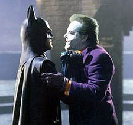

Batman (1989 film)
Batman is a 1989 American superhero film directed by Tim Burton and produced by Jon Peters, based on the DC Comics character of the same name. It is the first installment of Warner Bros.' initial Batman film series. The film stars Jack Nicholson, Michael Keaton in the title role, Kim Basinger, Robert Wuhl, Pat Hingle, Billy Dee Williams, Michael Gough, and Jack Palance. In the film, Batman deals with the rise of a costumed criminal known as "The Joker". After Burton was hired as director in 1986, Steve Englehart and Julie Hickson wrote film treatments before Sam Hamm wrote the first screenplay. Batman was not greenlit until after the success of Burton's Beetlejuice (1988). Numerous A-list actors were considered for the role of Batman before Keaton was cast. Keaton's casting caused a controversy since, by 1988, he had become typecast as a comedic actor and many observers doubted he could portray a serious role. Nicholson accepted the role of the Joker under strict conditions that dictated a high salary, a portion of the box office profits and his shooting schedule. The tone and themes of the film were influenced in part by Alan Moore's The Killing Joke and Frank Miller's The Dark Knight Returns. Filming took place at Pinewood Studios from October 1988 to January 1989. The budget escalated from $30 million to $48 million, while the 1988 Writers Guild of America strike forced Hamm to drop out. Uncredited rewrites were performed by Warren Skaaren, Charles McKeown and Jonathan Gems. Batman was a critical and financial success, earning over $400 million in box office totals. The film received several Saturn Award nominations and a Golden Globe nomination, and won an Academy Award. It also inspired the equally successful Batman: The Animated Series, paving the way for the DC animated universe, and has influenced Hollywood's modern marketing and development techniques of the superhero film genre.
Plot
The mayor of Gotham City orders district attorney Harvey Dent (Billy Dee Williams) and Commissioner Gordon (Pat Hingle) to increase police activity and combat crime in preparation for the city's 200th anniversary. Newspaper reporter Alexander Knox (Robert Wuhl) and photojournalist Vicki Vale (Kim Basinger) begin to investigate reports of an elusive dark vigilante nicknamed "Batman", who is also targeting criminals in an effort to clean up the city. Mob boss Carl Grissom (Jack Palance), who has already been targeted by Dent, discovers his mistress is involved with his second-in-command, Jack Napier (Jack Nicholson). With the help of corrupt policeman Max Eckhardt (William Hootkins), Grissom sets up Napier to be murdered during a raid at the Axis Chemicals plant. During the ensuing shootout, Eckhardt is killed by Napier after which Batman suddenly appears. The two struggle, and Napier is accidentally knocked into a vat of chemical waste. Batman flees, and Napier is thought to be dead. Batman is in actuality billionaire industrialist Bruce Wayne (Michael Keaton), an orphan who lives in the large mansion Wayne Manor with his butler Alfred Pennyworth (Michael Gough). Bruce later meets and falls for Vicki at a fundraiser, and the two begin a relationship. Napier is revealed to have survived the accident. Following a botched attempt to repair physical damage from exposure to chemical waste, Napier is horribly disfigured with chalk-white skin, emerald-green hair and a permanent ruby-red grin. Calling himself "The Joker", he kills Grissom and usurps his criminal empire, making the Axis plant his headquarters.
The Joker begins to spread terror in the city, first by lacing hygiene products with a deadly chemical known as "Smilex", which causes victims to laugh to death when used in certain combinations. The Joker then sets a trap at the Gotham Museum of Art for Vicki, and he and his henchmen vandalize the surrounding works of art. Batman arrives and rescues Vicki, and the pair escape in the Batmobile. Batman gives information about Smilex to Vicki so she can warn the city via Gotham newspapers about the poisoned products. The Joker begins plans to eliminate Batman. After recalling The Joker earlier asking him "Have you ever danced with the devil by the pale moonlight?" and remembering hearing the same quote as a child, Bruce discovers that The Joker (as Napier) is also the man who murdered his parents. Vicki suddenly appears in the Batcave, having been let in by Alfred. After avouching himself to Vicki, Bruce—as Batman—leaves to destroy the Axis Chemical plant. Meanwhile, planning to use poison gas to murder citizens, The Joker lures the townspeople to a nighttime parade with a promise to give away $20 million in cash. Batman arrives on the scene and saves Gotham City from the attack, but The Joker kidnaps Vicki and takes her to the top of Gotham City's Cathedral. Batman pursues the two, and at the top of the dusty edifice, the two adversaries confront each other in single combat. When The Joker attempts an escape via a helicopter, Batman secures The Joker's leg to a heavy stone sculpture, causing The Joker to fall from the helicopter and plummet to his doom. Following The Joker's death, Commissioner Gordon unveils the Bat-Signal along with a note from Batman read by Harvey Dent, promising to defend Gotham whenever crime strikes again.
Cast
- Michael Keaton as Bruce Wayne/Batman
- Jack Nicholson as Jack Napier/The Joker
- Kim Basinger as Vicki Vale
- Robert Wuhl as Alexander Knox
- Pat Hingle as Commissioner Gordon
- Billy Dee Williams as Harvey Dent
- Michael Gough as Alfred Pennyworth
- Jack Palance as Carl Grissom
- Jerry Hall as Alicia Hunt
- Tracey Walter as Bob the Goon
- Lee Wallace as Mayor Borg
- William Hootkins as Lt. Max Eckhardt
- Hugo E. Blick as Young Jack Napier
- Charles Roskilly as Young Bruce Wayne
- David Baxt as Thomas Wayne
- Sharon Holm as Martha Wayne